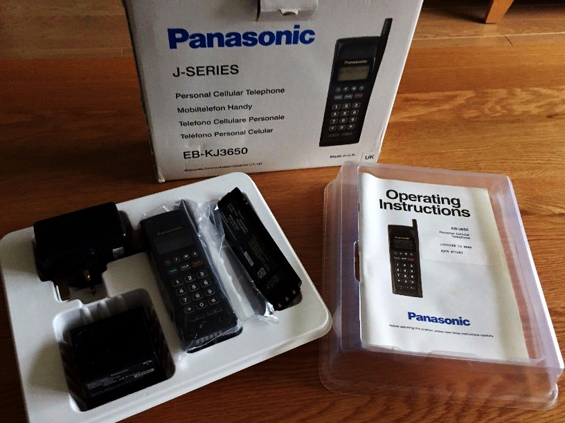

TACS

*this doc is under construction*
History
*TBD*
- Frequency range base station: 935.0125 MHz - 949.9875 MHz
- Frequency range mobile station: 890.0125 MHz - 904.9875 MHz
- Control channels: 21 for System A
- Voice channels: 289 for System A
- Control channels: 21 for System B
- Voice channels: 289 for System B
- Duplex distance: 45 MHz
- Channel spacing: 25 KHz
- Voice modulation: FM
- Signaling modulation: carrier FSK
- Frequency deviation: 6.4 KHz (FSK)
- Mobile station transmit power: 10 or 4 Watts (vehicular) 1.6 or 0.63 Watts
- Base station transmit power: ??? (around 50 Watts)
How it works
Setup of a base station
[Back to main page]
|